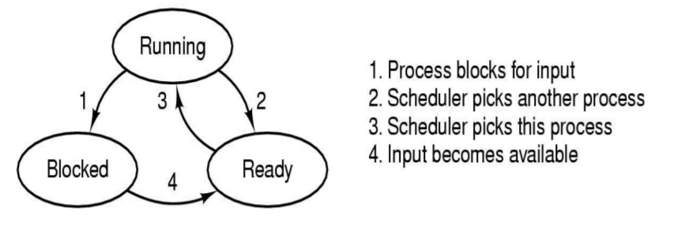

进程与线程
进程概念
- 一个具有一定独立功能的程序对某个数据集合上的一次动态执行过程和资源分配过程
- 进程的元素：代码、数据、进程表（进程控制块） Code、Data、PT（PCB）
- 是资源分配的基本单位
进程和程序的区别与联系
- 进程是动态的，程序是静态的
- 进程是暂时的，程序是永久的
- 进程和程序的组成不同
- 程序主要包含代码和数据
- 进程除了包含代码和数据以外，还有进程表
- 进程和程序间有非常紧密的联系
- 程序经过多次创建，可以对应不同的进程
- 一个进程通过系统调用，可以被多个程序所使用
进程概念
动态性、并发性、独立性、异步性（提高利用率）
进程的状态与转换
状态：
- 运行状态（Running）
- 阻塞状态（Blocked）
- 就绪状态（Ready）
转换：
- 运行状态→阻塞状态
- 运行状态→就绪状态
- 就绪状态→运行状态
- 阻塞状态→就绪状态

进程控制
进程创建
进程创建原语的主要工作是：首先查找系统的 PCB 表，查询有无空的 PCB
表项，如有，则申请一个，并对其进程初始化。初始化的项目有进程标识符（PID）、进程状态和运行程序的起始地址等；如果申请不成功，则返回创建失败信息。创建完成后，将进程表插入到就绪队列中。
进程创建的典型事件
- 用户登录
- 作业调度
- 提供服务
- 应用请求
进程的创建过程
- 申请空白进程表
- 为新进程分配资源
- 初始化进程表
- 如果进程就绪队列能够接纳新进程， 便将新进程插入就绪队列
进程撤销
撤销原语的主要工作是：首先检查 PCB 链表，寻找所要撤销的进程是否存在。如果找到了相应的表项后，撤销原语就释放该进程占用的资源并回收对应的PCB 数据结构。如果被撤销的进程还有子进程，则进程撤销原语必须先撤销子进程的 PCB 并释放其所占用的资源。
- 正常结束（自愿的）
- 异常结束
- 普通错误退出（自愿的）
- 致命错误退出（非自愿的）
- 外界干预（非自愿的）
进程阻塞
进程阻塞原语的运行：先停止处理机并同时保存该进程的处理机现场。然后将阻塞进程插入到等待队列中，再将控制权交给调度程序，调度程序会按调度算法从就绪队列中选择一个进程投入运行。
进程唤醒
唤醒原语工作：将被唤醒的进程从相应的等待队列移出，并将其 PCB 中状
态置为就绪态，并将其送入就绪队列。此时，唤醒原语既可以从调用程序处直接返回，也可以转向进程调度程序，由调度程序来选择一个合适的进程去运行。一个进程由运行状态转变为阻塞状态，是这个进程自己调用阻塞原语去完成
的，而进程由阻塞状态到就绪状态，却是另一个进程调用唤醒原语实现的，一般情况下，这个进程与被唤醒进程是具有一定相关性的并发进程。
引起进程阻塞和唤醒的事件
- 请求系统服务
- 启动某种操作
- 新数据尚未到达
- 无新工作可做
进程挂起
挂起原语工作：将进程交换到外存交换区挂起，释放其在内存中占用的资源，改写 PCB，返回系统。
进程激活
激活原语工作：将进程从外存交换区调入内存（需要重新申请内存），进行
内存重定位，改写 PCB 进程状态信息，内存分配信息，程序计数器等，返回激活原语调用处。当激活后的进程处于就绪状态时，返回后控制权将交还给调度程序，重新调度。
进程组织
进程实体
程序、数据集合、进程控制块（PCB）
- 程序：也称正文，描述进程所要完成的功能，特指二进制的指令代码。
- 数据集合：程序运行所需要的数据结构。包括常数，变量，堆，数据栈等。
- 进程控制块：进程控制块包含了进程的描述信息、控制信息和资源信息，是进程动态特性的集中反映。
进程控制块 PCB：进程表 PT
- 进程控制信息
—进程的基本信息
—处理机管理信息 - 进程内存资源分配
- 进程设备和文件的分配和使用情况
进程控制块的组织
链表方式、索引方式
进程通信
- 进程通信：进程间的信息交换工作称为进程间的通信
- P、V 操作称为低级通信
- 高级通信方式可分为三大类：共享内存、消息传递、管道机制
- UNIX 通信还有信号（Signal）机制
- 网络通信还有套接字（Socket）
线程概念和多线程模型
- 线程的引入
- 线程的属性
- 轻型实体（容易创建和撤销）
- 独立调度和分派的基本单位
- 可并发执行
- 共享进程资源
- 适应硬件的发展
- 线程表
线程实体
线程是进程中的一个实体，它是操作系统进行独立调度和分派的基本单位，但不是资源分配的基本单位。
线程实现方式：线程在具体实现时形式上又分为内核线程和用户线程。
- 内核线程
- 用户线程
- 多线程模型
注：轻量级进程——只含有一个线程的进程
处理机调度
调度的基本概念
调度的基本概念
进程的数量多于处理机的个数，竞争处理机。分配处理机的任务由进程调度
程序完成，由进程分派程序具体实行。用一定的算法，动态地把处理机分配给进程，使之能公平、合理和高效地运行。调度是分层次的。—个作业从提交开始，直到完成，往往要经历多级调度。
作业调度
作业调度又称宏观调度或高级调度。其主要任务是按一定的原则，对外存储器中处于后备状态的作业进行选择。
进程调度
进程调度又称微观调度，是指决定就绪队列中哪个进程将获得处理机，并实
际将处理机分配给该进程的操作。进程调度是操作系统中最基本的调度。调度过程体现了现代操作系统将策略与机制分离的设计思想，调度考虑的是选择进程的算法，并将算法选择提供给用户使用；而分派程序是机制，它是直接进行处理机切换的操作者。
交换调度：交换调度又称中级调度。（内存中研究的）
调度目标和准则
- 公平性：确保每个进程都能公平地获得处理机的机会
- 高效性：尽可能使处理机的利用率达到 100%
- 响应时间：对交互式系统要求有符合用户习惯的响应时间
- 吞吐量：单位时间内批处理系统所能完成的工作量
调度的时机、切换和过程
1. 引起进程调度的典型事件：
- 正在运行的进程发生某事件而不能再继续运行
- 运行中的进程因提出输入/输出请求而暂停运行
- 在进程通信或同步过程中运行了某种原语操作，如 P 操作等
- 在可抢先式调度中，有一个比当前进程优先级更高的进程进入就绪队列
- 在时间片轮转算法中，时间片用完。
2. 分派程序（dispatcher）：
- 分派程序完成进程的切换，是实际操作者。
- 上下文切换
调度的基本准则
调度的基本准则包括：处理机利用率、吞吐量、周转时间
调度的基本名词解释：后备时间、等待时间、响应时间、带权周转时间
调度方式
- 不可抢先方式
- 可抢先方式
典型调度算法
- 先来先服务（FCFS）
- 短作业或短进（线）程优先（SJF&SPF）
- 时间片轮转调度算法（RR）
- 高优先级优先调度算法
- 高响应比优先调度（HRRN）算法
响应比 Rp =（等待时间+预计运行时间）/ 预计运行时间 = 响应时间 / 预计运行时间
- 多级反馈队列调度算法
同步与互斥
同步与互斥的基本概念
基本概念：
- 间接相互制约：源于资源共享-互斥。
- 直接相互制约：源于进程合作-同步。
- 临界资源：一次只允许一个进程使用的资源称为临界资源
- 临界区：在每个进程中，访问临界资源的那段程序称为临界区
同步与互斥机制应遵循的准则：
- 空闲则进
- 遇忙等待
- 有限等待
- 让权等待
实现临界区互斥的基本方法
- 软件实现方法
- 硬件实现方法
信号量
信号量：信号量的值是可变的，由初始化和 P、V 操作来改变。
P（S）操作的定义：
–S.Q； //表示申请一个资源
if (S.Q < 0) //若没有空闲资源
{
调用进程进入等待队列 S.Q；
阻塞调用进程；
}
V（S）操作的定义：
++S.Q； //表示释放一个资源
if (S.Q <= 0) //若有进程处于阻塞状态
{
从等待队列 S.Q 中取出一个进程 P；
进程 P 进入就绪队列；}P、V 操作实现互斥模型：
type def semaphore；
semaphore S=1；
PROC1 PROC2
P（S）； P（S）；
critical section critical section
V（S）； V（S）；
remainder section remainder section
P、V 操作实现同步模型：
type def semaphore；
semaphore S=0；
PROC1 PROC2
P（S）；
produce data； consume data；
V（S）；
remainder section remainder section
管程
管程：一个管程定义了一个数据结构和能为并发进程所运行的一组操作，这组操作能同步进程和改变管程中的数据。
经典的同步问题
- 生产者-消费者问题
- 读者-写者问题
- 哲学家进餐问题
死锁
死锁的概念
死锁：
系统中两个或两个以上的进程无限期地相互等待永远不会发生的条件，系统处于一种停滞状态，这种情况称为死锁。
死锁产生的原因：
- 进程推进顺序不当
- 对互斥资源的分配不当
产生死锁的四个必要条件：
- 互斥条件：任一时刻只允许一个进程使用资源。
- 非剥夺条件：进程已经占用的资源，不会被强制剥夺。
- 占用并请求条件：进程占有部分资源，并申请更多的资源，且不会主动释放已经占有的资源。
- 循环等待：请求资源的进程形成了循环。
死锁的处理策略：
- 忽略死锁。
- 锁的检测与恢复。
- 死锁的避免。
- 死锁的预防。
死锁预防：
| 条件 | 方法 |
|---|---|
| 互斥 | 虚拟设备假脱机 |
| 占有并等待 | 一次分配全部资源 |
| 非剥夺 | 主动放弃 |
| 循环等待 | 有序分配资源 |
死锁避免：
- 安全状态
- 不安全状态
银行家算法：（实际系统中难以实现，很难事先声明需要多少资源）
银行家算法问题描述是：一个银行家把他的固定资金借给若干顾客，使这些顾客能满足对资金的要求又能完成其交易，也使银行家可以收回全部的现金。只要不出现一个顾客借走所有资金后还不够、还需要借贷。则银行家的资金应是安全的，银行家需要一个算法保证借出去的资金在有限时间内可收回。
死锁的检测与解除
死锁的检测与解除：
- 资源分配图算法
- 资源矩阵算法
死锁的解除：
- 资源剥夺法
- 进程撤销法
- 进程回退法
- 重新启动系统